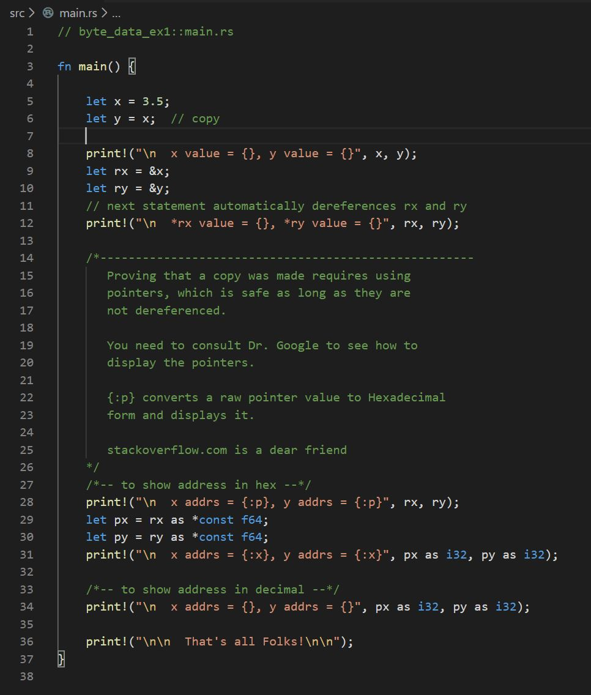
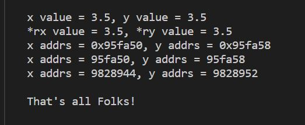

| - | Bind: | Associate an identifier with a value |
| - | copy: | Bind to a copy of the value of a blittable type, executed implicitly by compiler generated code, by copying bytes from source to destination location. Fast. |
| - | borrow: | Create a named pointer to an identifier's location. Pointers used for borrows must satisfy Rust's ownership rules, discussed in an upcoming Bite. Borrows are the only pointers that can be dereferenced in safe code. |
| - | Move: | Transfer ownership of a type's resources, usually executed implicitly. Accomplished by creating, for the destination, a pointer to the source's resources (data allocated on the heap), and invalidating the source pointer. Fast. |
| - | Clone: | Create a copy of a non-blittable type, invoked by program code. Slower. |
| - | mutate: | Change the value associated with a mutable identifier. |
| - | bool | |
| - | char (utf-8) | |
| - | integers: | i8, i16, i32, i64, isize, u8, u16, u32, u64, usize |
| - | floats: | f32, f64 |
| - | aggregates: | array: [T;N], slice: [T], str: literal string "....", tuple: (T1, T2, ...), struct { T1, T2, ... } |
| - | String | a stack-based object holding a collection of utf-8 chars in the heap |
| - | Vec<T> | very like a String, but holding a heap-based collection of an arbitrary type, T |
| - | VecDeque<T> | stack-based object holding a heap-based collection of T objects with efficient access to both front and back |
| - | Map<K, V>: | an associative container holding key-value pairs in the heap |
| - | ... |
| Trait | Applies to: | Examples | Consequences |
|---|---|---|---|
| Copy |
Single contiguous memory block ==> blittable |
ints, floats, aggregates of Copy types | Copys value from one memory location to another. Source valid after copy |
| Move |
non-contiguous block ==> not blittable |
Strings, Vecs, VecDeques, ... aggregates holding at least one Move type |
Transfers data ownership to another identifier. Source invalid after move |
| Clone | most types | ints, floats, Structs, Strings, Vecs, VecDeques, ... | Makes copy of resources for another identifier. Source valid after clone |
|  |  |